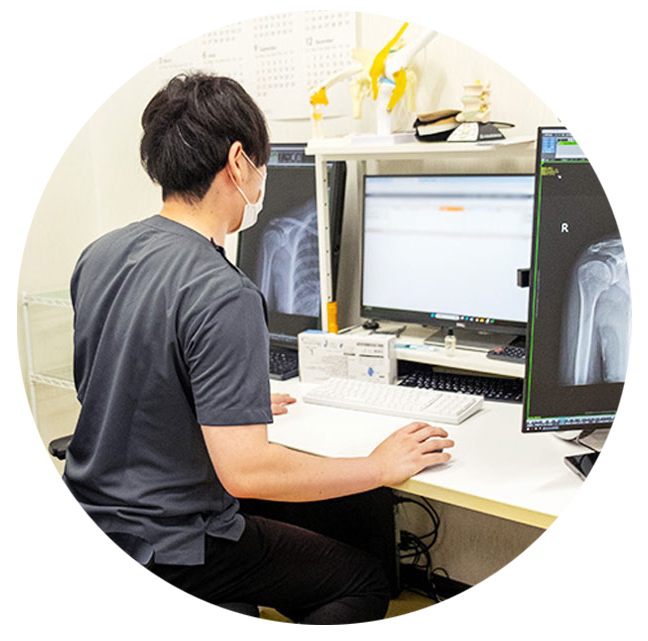

Mid career Recruitment中途採用（医師）
医療法人社団やまびこでは、「前進」「笑顔」をモットーに地域の方々への寄り添った医療を心がけています。
当院では、勤務ドクターが働きやすいように環境や制度などを整えるよう努めております。
17時までの勤務、希望される曜日での勤務、時間短縮勤務の対応など、ワークライフバランスを考慮した勤務が可能です。
入職後は、医師専属の人事スタッフが個人情報保護のもと勤務について対応いたします。

| 募集職種 | 常勤医師、スポット医師 |
|---|---|
| 業務内容 |
診療
診断書などの書類作成業務、レセプト業務といった、診療以外の業務が殆どないような体制を整えております。 |
| 福利厚生 |
|
| エントリー方法 | エントリーフォームからご応募ください。 メール（info@yamabiko-group.or.jp）または郵送で履歴書をお送りいただくことも可能です。 《郵送先》 〒222-0033 神奈川県横浜市港北区新横浜3-6-5 新横浜第一生命ビル2階 医療法人社団やまびこ 総務課人事宛 |
あなたも、地域医療を支える仲間に。
やまびこグループでは、地域医療を支える仲間を募集しています。
見学や説明会の参加も歓迎しておりますので、お気軽にエントリーください。